judge_right_D_wrong：train_1127.png 单元 86，标签 0，判断器 0.1271，D 0.1056。视觉原因待人工填写。
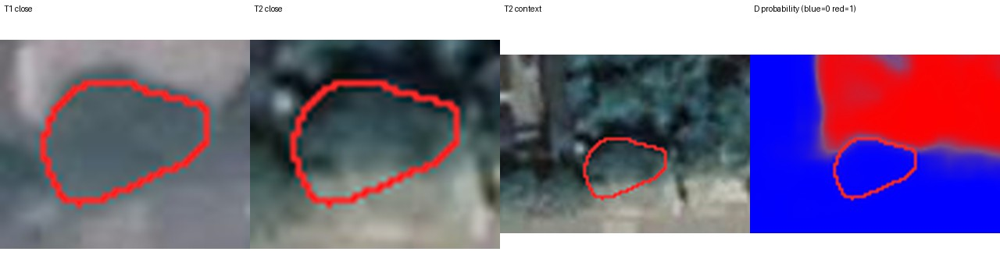
红色轮廓为过滤后的新增区域。阈值按各自验证集加权二分类 F1 最大值选择；正例权重=负例数/正例数。
人工分类填写 annotations.csv：认错地物 / 季节或色调 / 配准错位 / 真值可疑 / 太小看不清 / 其他。category 和 explanation 留空等待审核。
{"judge_right_D_wrong": {"available": 3229, "selected": 12}, "judge_wrong_D_right": {"available": 3806, "selected": 12}}
judge_right_D_wrong：train_1127.png 单元 86，标签 0，判断器 0.1271，D 0.1056。视觉原因待人工填写。

judge_right_D_wrong：train_207.png 单元 181，标签 0，判断器 0.0987，D 0.2450。视觉原因待人工填写。
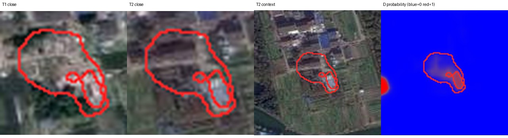
judge_right_D_wrong：train_2679.png 单元 152，标签 0，判断器 0.1623，D 0.0097。视觉原因待人工填写。
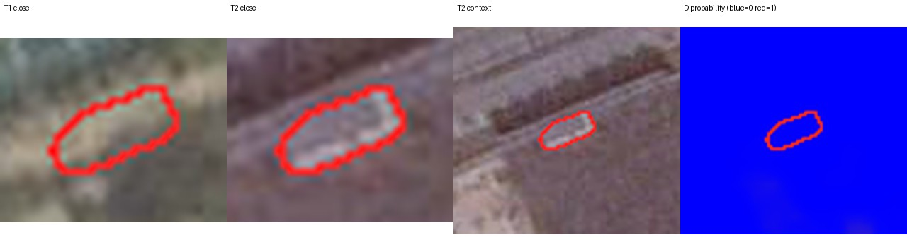
judge_right_D_wrong：train_2099.png 单元 376，标签 0，判断器 0.2525，D 0.0233。视觉原因待人工填写。
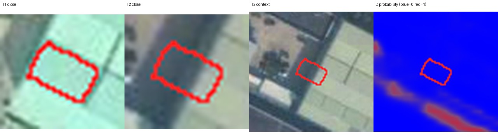
judge_right_D_wrong：train_443.png 单元 42，标签 0，判断器 0.0566，D 0.0331。视觉原因待人工填写。
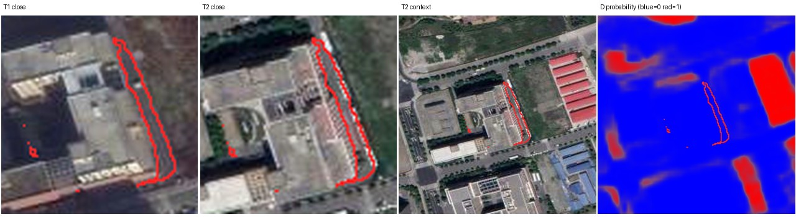
judge_right_D_wrong：train_1360.png 单元 174，标签 0，判断器 0.2593，D 0.0090。视觉原因待人工填写。
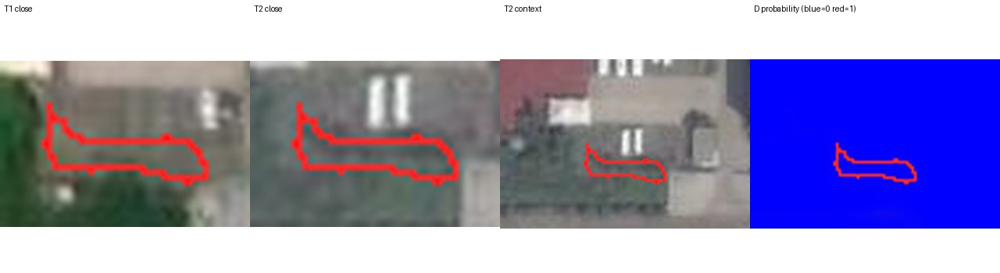
judge_right_D_wrong：train_2309.png 单元 347，标签 0，判断器 0.0678，D 0.0124。视觉原因待人工填写。
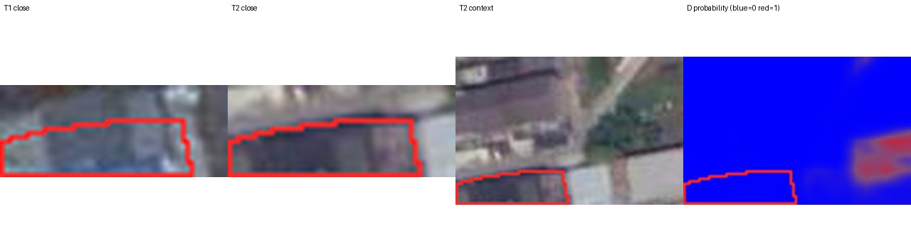
judge_right_D_wrong：train_703.png 单元 164，标签 0，判断器 0.1383，D 0.0529。视觉原因待人工填写。
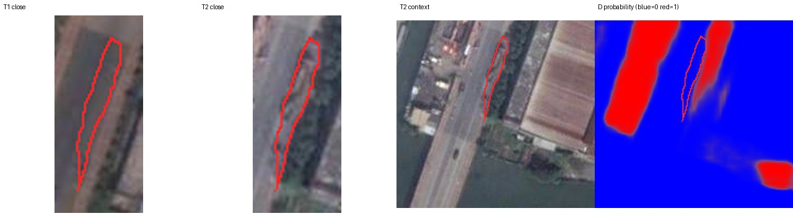
judge_right_D_wrong：train_1086.png 单元 182，标签 0，判断器 0.2531，D 0.0090。视觉原因待人工填写。
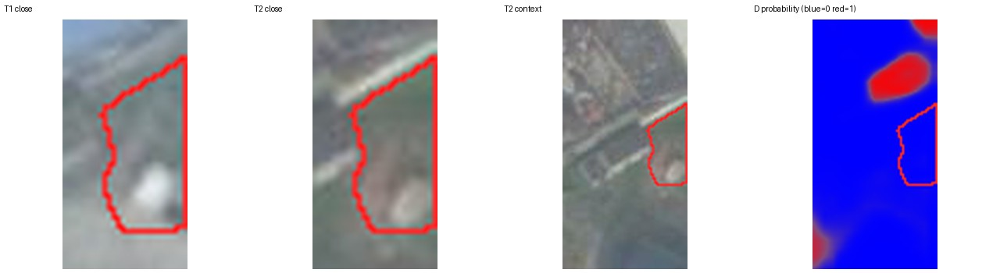
judge_right_D_wrong：train_2748.png 单元 27，标签 0，判断器 0.0190，D 0.0101。视觉原因待人工填写。
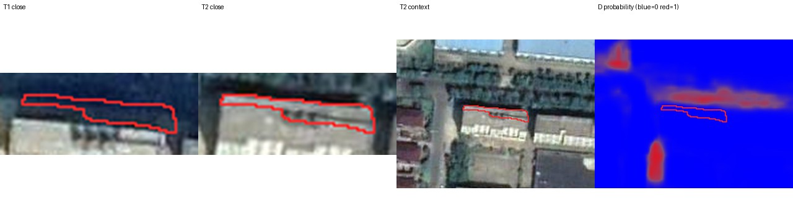
judge_right_D_wrong：train_214.png 单元 179，标签 0，判断器 0.0511，D 0.0384。视觉原因待人工填写。
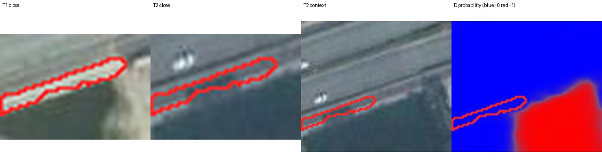
judge_right_D_wrong：train_2502.png 单元 88，标签 0，判断器 0.1230，D 0.0124。视觉原因待人工填写。
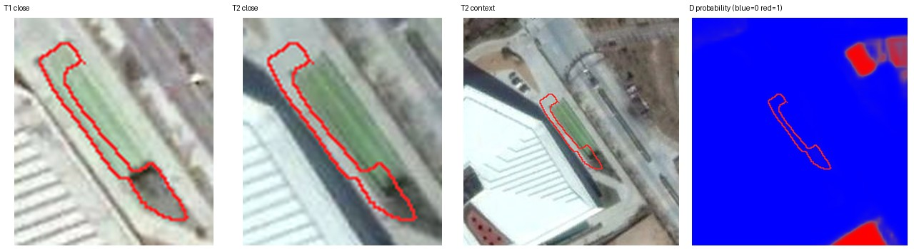
judge_wrong_D_right：train_281.png 单元 165，标签 0，判断器 0.3113，D 0.0008。视觉原因待人工填写。
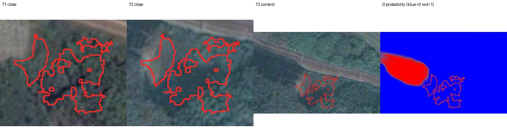
judge_wrong_D_right：train_2855.png 单元 106，标签 0，判断器 0.3919，D 0.0012。视觉原因待人工填写。
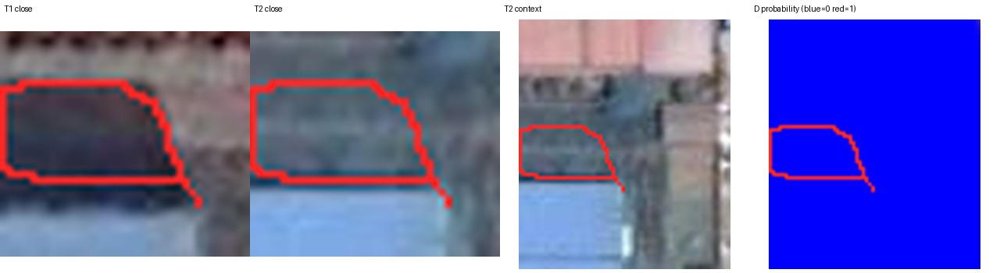
judge_wrong_D_right：train_969.png 单元 64，标签 0，判断器 0.4734，D 0.0029。视觉原因待人工填写。
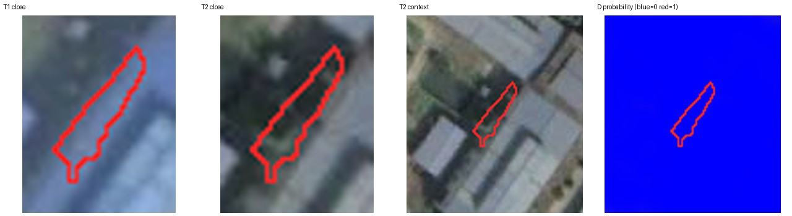
judge_wrong_D_right：train_1660.png 单元 19，标签 0，判断器 0.6527，D 0.0021。视觉原因待人工填写。
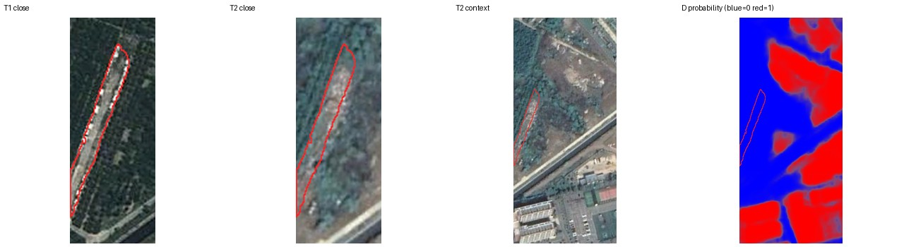
judge_wrong_D_right：train_2897.png 单元 52，标签 0，判断器 0.6681，D 0.0006。视觉原因待人工填写。
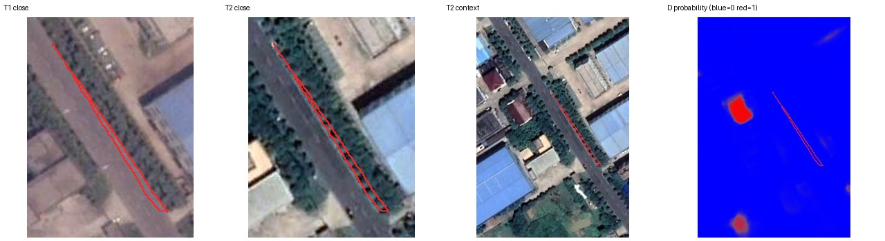
judge_wrong_D_right：train_2596.png 单元 755，标签 0，判断器 0.3088，D 0.0053。视觉原因待人工填写。
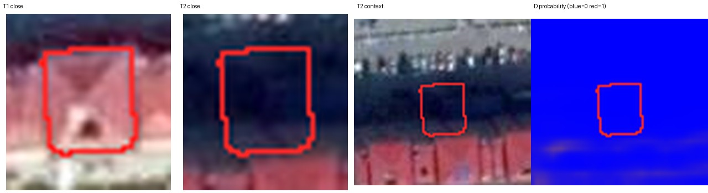
judge_wrong_D_right：train_665.png 单元 203，标签 1，判断器 0.1768，D 0.0327。视觉原因待人工填写。
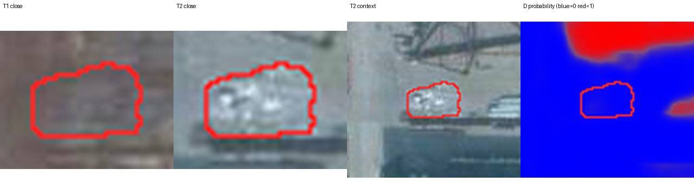
judge_wrong_D_right：train_1160.png 单元 21，标签 1，判断器 0.1379，D 0.0782。视觉原因待人工填写。
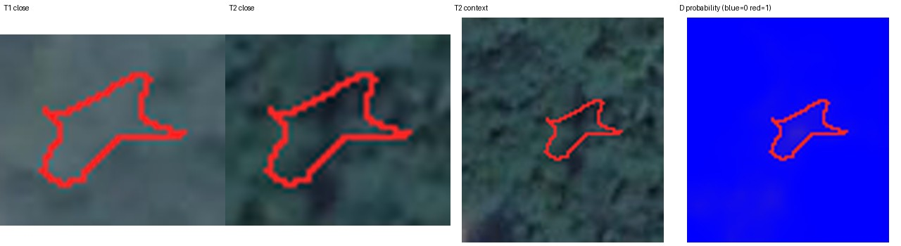
judge_wrong_D_right：train_1347.png 单元 297，标签 0，判断器 0.4260，D 0.0002。视觉原因待人工填写。
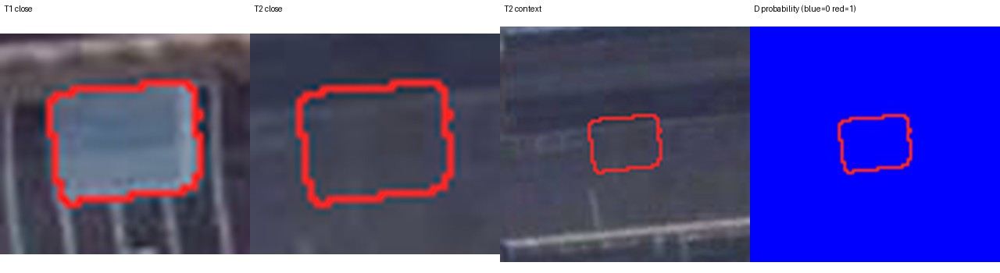
judge_wrong_D_right：train_869.png 单元 215，标签 0，判断器 0.4661，D 0.0060。视觉原因待人工填写。
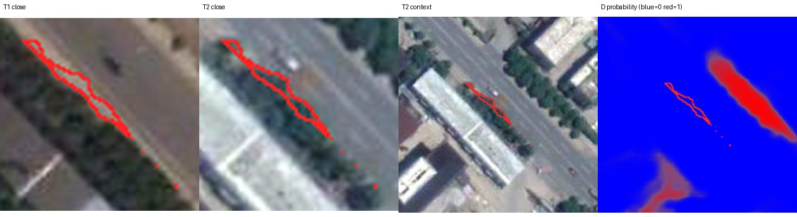
judge_wrong_D_right：train_180.png 单元 190，标签 0，判断器 0.3539，D 0.0047。视觉原因待人工填写。
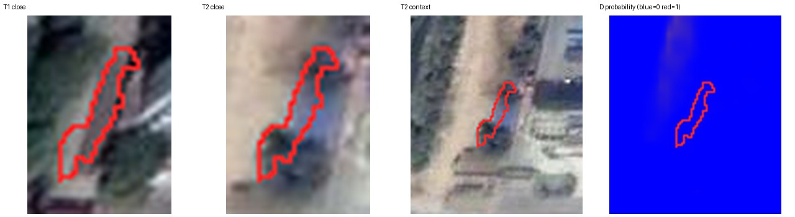
judge_wrong_D_right：train_2041.png 单元 149，标签 0，判断器 0.6408，D 0.0048。视觉原因待人工填写。
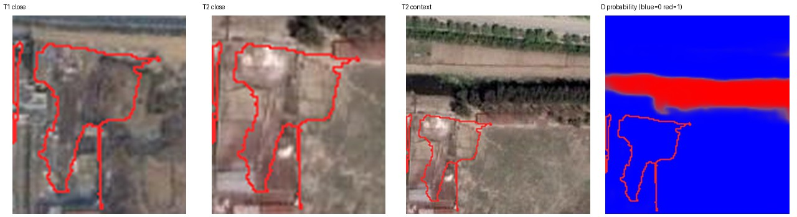